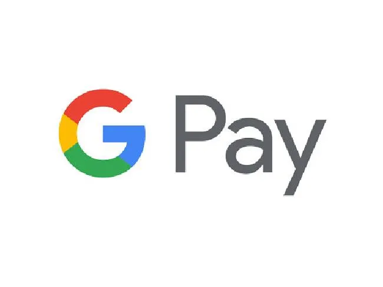

PhonePe, Google Pay, Paytm, and other UPI apps may enforce a daily transaction limit
Highlights
- The Reserve Bank of India is looking at creating limits for UPI transactions.
- UPI apps like Google Pay, PhonePe, Paytm, and others will be affected.
- Users will only be able to make limited transactions on these apps on a daily basis

A recent report by IANS states that the National Payments Corporation of India (NPCI) is currently holding discussions with the Reserve Bank of India (RBI) to impose transaction limits on UPI apps like Google Pay, PhonePe, Paytm, and others. As a result of this, users will only be able to make limited transactions on these apps on a daily basis.
The NPCI is responsible for operating digital UPI pipelines and aims to bring about a reduction in player volume to 30% by 31st December.
Why does the NPCI want to set up a daily transaction limit?
The report by IANS states that PhonePe and Google Pay account for 80% of the market share. In an effort to reduce the concentration risk, which means the level of risk that arises when all your eggs are in one basket, so to speak, NPCI now wants to reduce it to 30%. This will arguably give other players a chance to thrive as well by breaking the monopoly held by first-movers.
The meeting took place between the NPCI, senior members of RBI, and senior officials from the finance ministry to ascertain the steps that can be taken in the coming future. As of now, there is no indication that the proposed deadline of 31st December needs to be pushed. Furthermore, the NPCI will be revealing its decision about market share implementation by the end of November, which should bring further clarity to how the new regulations will actually impact customers.
Previous caps set in place by NPCI
The NPCI has issued a similar directive in the past, capping the share of transactions at 30% of the total UPI transactions. This meant that third-party application providers could only process 30% of these transactions. The directive was brought into effect on 1st January 2021 and was calculated based on the volume of transactions that had been processed in the previous quarter. With many apps like Youtube accepting UPI payments and Whatsapp integrating their own payment processes, the cap on UPI transactions may throw a spanner in their projected revenues.